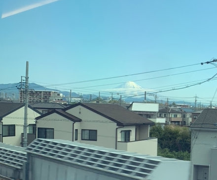

- Bereich
- Kurz nach Bahnhof Shizuoka und dem Abe
- Sitzseite
- Platz A · links Richtung Shin-Osaka; rechts Richtung Tokyo
- Zeitpunkt
- Etwa 54 Minuten nach der Abfahrt in Tokyo im Nozomi
- Sichtdauer
- Wenige SekundenUngefähre Nozomi-Zeit; abhängig von Zuggeschwindigkeit, Wetter und Sichthindernissen.
DIE GESCHICHTE
Warum erscheint der Fuji links bei Platz A?
Der Tokaido Shinkansen verläuft zwischen Tokyo und Shin-Osaka überwiegend in Ost-West-Richtung. Weil der Fuji ungefähr nördlich liegt, sieht man ihn gewöhnlich von Platz E auf der Bergseite – Richtung Kyoto am rechten Fenster. Doch auf einem kurzen Stück nach dem Bahnhof Shizuoka und dem Abe biegt die Strecke deutlich nach Süden zum Meer ab. Der Fuji erscheint kurz links bei Platz A: das klassische „Hidari-Fuji“, Fuji links. Dieselbe Geometrie gab es am alten Tokaido der Edo-Zeit. Zwei Orte wurden dafür berühmt: „Nango Hidari-Fuji“ bei Chigasaki und „Yoshiwara Hidari-Fuji“ bei der heutigen Stadt Fuji. Utagawa Hiroshige zeigte Letzteren als „Yoshiwara: Fuji links“ in seiner berühmten Holzschnittfolge Die 53 Stationen des Tokaido.
Von Tokyo nach Shin-Osaka schauen Sie direkt nach dem Bahnhof Shizuoka und der Überquerung des Abe aus dem linken Fenster bei Platz A. Richtung Tokyo kehrt sich die Reihenfolge um.
Die Fensterseite für den Fuji, die Zeiten ab Tokyo / Kyoto / Osaka, Hinweise für bewölkte Tage und den Vergleich mit anderen Fuji-Aussichtspunkten finden Sie im Fuji-Guide.
WAS SIE SEHEN
So entdecken Sie ihn – und was die Jahreszeit verändert
Richtung Shin-Osaka liegt dieser kurze Blick im Bezirk Suruga der Stadt Shizuoka, bald nach der Überquerung des Abe. Das Sichtfenster reicht von wenigen Sekunden bis etwa 10–15 Sekunden. Suchen Sie den Fuji zwischen Gebäuden und Fabriken auf der Seite von Platz A und schauen Sie rechtzeitig aus dem Fenster.
Im Winter und frühen Frühling hebt sich der schneebedeckte Fuji klar ab und ist selbst zwischen Gebäuden und Fabriken auf der Seite von Platz A erkennbar. Im schneelosen Sommer verschmilzt er mit der ähnlichen Himmelsfarbe und ist überraschend schwer zu finden. Wolken, Regen oder Dunst können ihn verdecken. Zwischen Mishima und Shin-Fuji bietet Platz E später auf der Reise eine nähere Ansicht, die ebenfalls vom Wetter abhängt.
Auch Richtung Tokyo schauen Sie auf der Seite von Platz A: Sie liegt dann rechts in Fahrtrichtung. Der Name „Fuji links“ bezeichnet die Ansicht in Richtung Shin-Osaka.
AUF DER KARTE
Standort auf einen Blick
Karte öffnenZwischen der Sehenswürdigkeit und dem Aussichtspunkt im Shinkansen wechseln.
IHR GUIDE FÜR UNTERWEGS
Verpassen Sie nicht den Ausblick
WEITERFÜHRENDE LEKTÜRE
Quellen
Offizielle Informationen und Aufzeichnungen von Ausblicken.